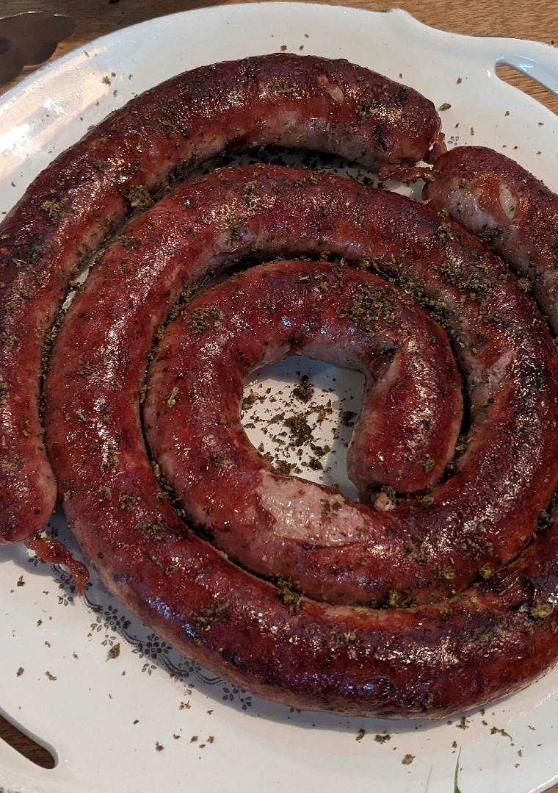

Charcuterie maison

Charcuterie maison
Saucisse de Toulouse
Préparation : 1 h
Repos : 12 h
Ingrédients (pour 1 kg de mêlée)
- 650 g de maigre de porc
- 350 g de gras dur de porc
- 18 g de sel fin
- 2 g de poivre
- 0,5 g de muscade
- menu de porc 32/34
Quantités adaptées. Les temps de cuisson ne sont pas recalculés.
- Retirer les gros nerfs, découenner le gras, couper le tout en morceaux réguliers.
- Saler maigre et gras séparément. Filmer et laisser 12 à 24 heures entre 0 et 3 °C.
- Hacher à la grille de 8 mm, ajouter poivre et muscade, travailler jusqu’à une mêlée homogène.
- Faire tremper le boyau dans beaucoup d’eau, l’enfiler sur le poussoir et embosser sans air.
- Portionner en saucisses de 10 à 12 cm, les égoutter au froid.
- À la dégustation, cuire jusqu’à 71 °C à cœur au moins.
À conserver au froid, jamais au placard
Au réfrigérateur entre 0 et 4 °C : 2 jours au plus. Au congélateur à −18 °C, dès le refroidissement : 3 mois au plus.
Les règles des bocaux
D’après le guide pédagogique du CAP charcuterie-traiteur, académie de Versailles, 2024. Conservation réduite pour la maison et température de cuisson ajoutée.